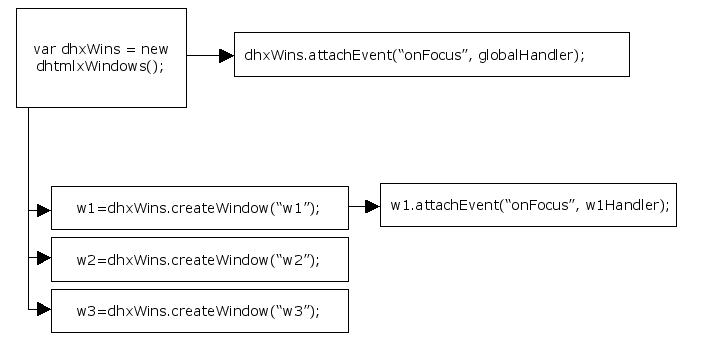

Default events signal various actions, such as the user clicking a button to Park a window, or a window is being closed. Default events are usually button events.
Button events can be as follows:
Default events can be redefined by user, who can choose to assign other user-defined events instead. In this case, default events will be ignored until they are restored by user.
The user can choose to redefine a default button event by adding any user-defined event instead. To redefine a button default event the user can use attachEvent() method:
myWins.window(id).button(id).attachEvent(eventName, handler);
The entire point of an event is to inform a handler that something has happened to a component in the GUI. A handler can figure out what exactly happened and respond in a meaningful way.
The full list of events to which user-defined handlers can be attached is given in the dhtmlXWindowsCell API.
The user can add global event handlers for windows.
To do this he should use attachEvent() method with the following parameters:
myWins.attachEvent(evName, evHandler);
Events can also be attached directly in the object constructor:
var win = myWins.createWindow({
id:"about",
onClose:function(){
alert("Window is closing");
return true;
}
});
Several handlers can be attached to one and the same event, and all of them will be executed.
The names of the events are case-insensitive.
You can find the full list of global windows events in the Windows API.
If there is a window to which the user wants to assign a special handler, this can be done by adding the handler to the window directly. While other windows will be calling global handlers, this window with personal handler will call this personal handler:
myWins.window(id).attachEvent(eventName, handler);
The user can detach a personal event from a window. In this case a global event handler will be restored for this window, i.e. when personal handler is removed from the window, the window will call global handler.
myWins.window(id).detachEvent(eventId);
Global handlers can be easily removed with the help of the following method:
myWins.detachEvent(eventId);

In the situation described above windows w2 and w3 will call "globalHandler" when they are focused.
The window w1 will call personal "w1Handler" when focused.
Back to top